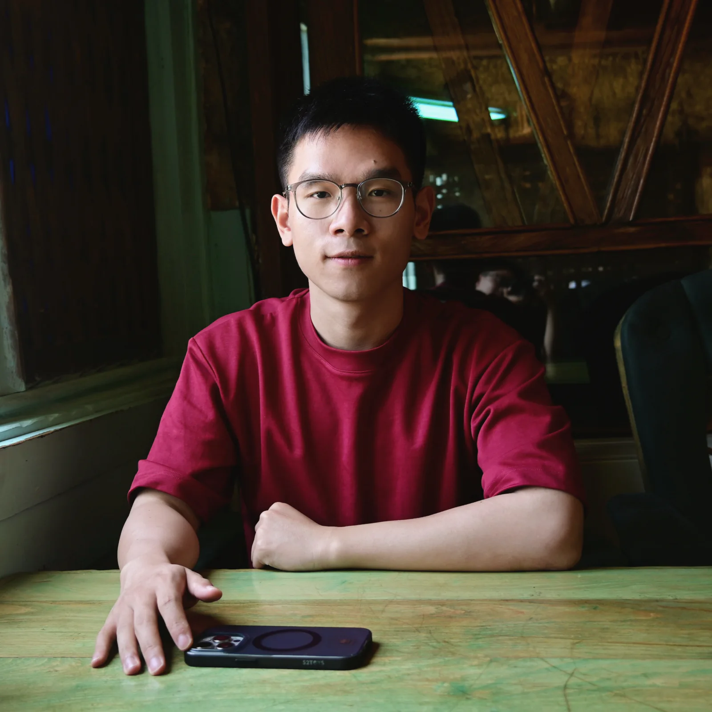
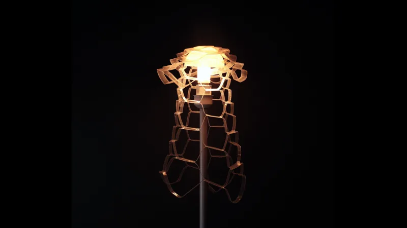
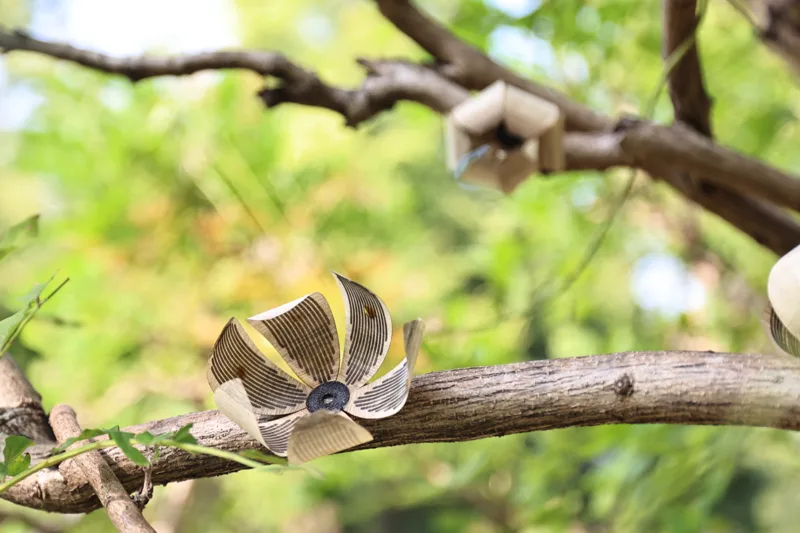

HygroFold
Milli-scale shape-changing interfaces patterned on cellophane film.
HCI researcher · PhD candidate at Zhejiang University
I explore fabrication and responsive materials for adaptive, accessible, and sustainable interactions.

I am a PhD candidate at Zhejiang University’s College of Artificial Intelligence, advised by Prof. Guanyun Wang at Guanyun Lab. My research investigates personal fabrication as a way to empower people through customized, adaptive, and sustainable production.
Fabricating a smarter and more sustainable future.
Milli-scale shape-changing interfaces patterned on cellophane film.

Cross-scale inflatables with large contraction and tunable stretchability.

Thermo-hygro-coordinating wood actuators for human–nature interaction.

Bistable inflatable wearables developed as choreographic tools.
Yinan Zhang, Zhe Gao, Chuang Chen, Ye Tao, Guanyun Wang*
Junzhe Ji, Chuang Chen, Boyu Feng, Ye Tao, Guanyun Wang*
Yue Yang, Chuang Chen, et al.
Yulu Chen, Chuang Chen, Yue Yang, Ye Tao, Guanyun Wang*
HygroFold was accepted as a poster at CHI 2026.
KiriInflate was published as a full paper at UIST 2025.
TH-Wood received a Best Paper Honorable Mention at CHI 2025.
HydroSkin and SnapInflatables were published at CHI 2024.